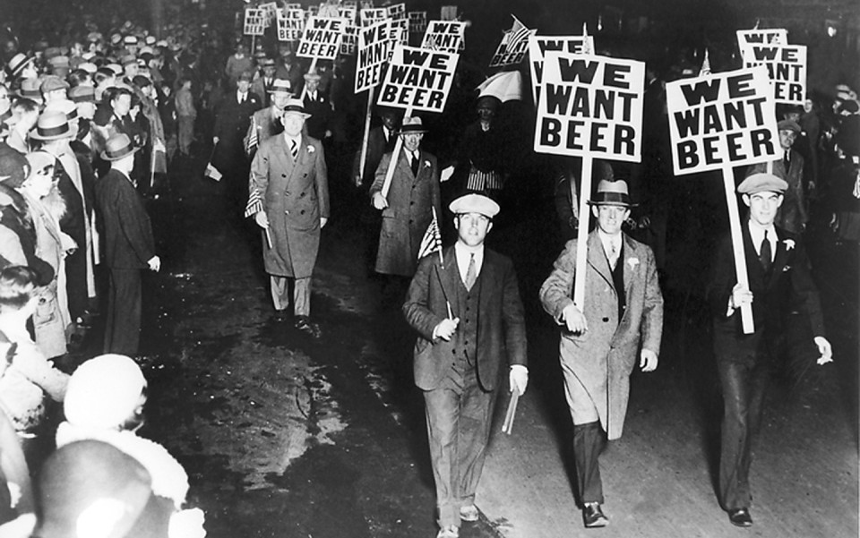

HISTORY
Beer brewing and drinking are activities that have been part of the human experience seemingly since the dawn of civilization. Around 10,000 years ago, mankind began to move away from living life as nomadic hunter gatherers, and began settling down in one spot to farm the land. Grain, a vital ingredient in beer making, was cultivated by these new agricultural societies.
No one is exactly sure how the process of beer making was discovered or who first discovered it, but it is thought that some bread or grain got wet, fermenting into an inebriating pile of mush thanks to yeast in the air. One has to wonder at the thought process of the person tasting the result for the first time – perhaps it was a dare between Mesopotamian frat boys… or more likely it was simply that up until very recently, no one would have dreamed of wasting any food, even putrid mush. If there was a way to make it palatable and it didn’t kill you, people would do it to avoid waste.
What is beer exactly? By excruciatingly simple definition, beer is any fermented beverage made with a cereal grain. Specifically, beer is made from these four primary ingredients:
The brewing industry is a global business, consisting of several dominant multinational companies and many thousands of smaller producers ranging from brewpubs to regional breweries. More than 133 billion litres (35 billion gallons) are sold per year—producing total global revenues of $294.5 billion (£147.7 billion) in 2006.
While there are many types of beer brewed, the basics of brewing beer are shared across national and cultural boundaries. The traditional European brewing regions—Germany, Belgium, England and the Czech Republic—have local varieties of beer.